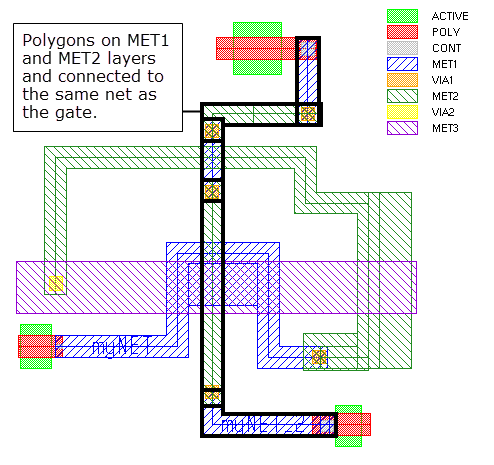
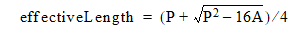

This check measures the path lengths of
nets connected to MOS gates on the first two layers of metal interconnect.
An effective length of each polygon in the path is estimated using
an equation.
The following figure shows the polygons in the path connected
to the top and bottom gates.
Figure 1. Net Path
Connected to Gate
The effective length of a polygon is given by this equation,
where P is the polygon perimeter and A is the area:

Try It!
 |
Calibre Advanced DRC (eqDRC) Tutorial and Example Kit
Go to this page on Support Center
to download the complete eKit.
This example is in the device_routing_checks/gate_net_path_length/effective_length_method
example directory.
|
Procedure
- Make sure
code similar to the following exists in your rules for connecting
device gates up through the interconnect layer stack:
gate = POLY AND ACTIVE
CONNECT POLY gate
CONNECT MET1 POLY by CONT
CONNECT MET2 MET1 by VIA1
- Add the
following code as a macro to calculate the effective length for
polygons on the input layer:
// effective length = (P + (sqrt(P^2 -16*A)))/4
// P = perimeter, A = area
DMACRO EffectiveLength layer_in layer_out {
layer_out = DFM PROPERTY layer_in
[leff = (PERIM(layer_in)
+SQRT(FMAX(PERIM(layer_in)*PERIM(layer_in)
- 16*AREA(layer_in),0)))/4 ]
[Netname = NETID(layer_in)]
}
The property leff contains the effective length. The netID of
the input layer is attached for debugging purposes.
- Find the
MET1 and MET2 shapes on nets attached to gates,
// find metal layers on same net as gate polygon
M1 = NET AREA RATIO MET1 gate [!!AREA(gate)] == 1
M2 = NET AREA RATIO MET2 gate [!!AREA(gate)] == 1
- Pass the
M1 and M2 layers from the previous step to the macro from Step 2. Then sum the
path length properties on the gate polygons and attach the sum as
the property EffLength_M1M2.
// Call a macro to calculate effective lengths for layers M1 and M2.
// The output layers M1_len and M2_len have the property leff
// attached to each shape.
CMACRO EffectiveLength M1 M1_len
CMACRO EffectiveLength M2 M2_len
// Sum the lengths of M1 and M2 shapes on the same net as gate.
// Do not generate output if M2 shapes are not part of the path.
// Use this layer as an input for calculating path lengths on MET3
// if needed.
M1M2_gate = DFM PROPERTY gate M1_len M2_len NODAL MULTI
[ EffLength_M1M2 = (PROPERTY(M2_len,leff) == 0) ? 0 :
PROPERTY(M1_len,leff) + PROPERTY(M2_len,leff) ] > 0
[ Netname = NETID(gate) ]
- Output
the results.
// Set default options for DFM RDB operations
DFM DEFAULTS RDB CELL SPACE ALL CELLS CHECKNAME "%_l_"
effective_path_length {
DFM RDB M1M2_gate "eqdrc_effective_length.rdb"
}
- If debug
output is desired, comment out the DRC Unselect Check statement
to run the debug check. The M1_len and M2_len layers have individual
M1 and M2 shapes with attached properties leff and Netname.
DRC UNSELECT CHECK path_length_debug
path_length_debug {
DFM RDB M1_len "eqdrc_effective_length.rdb"
DFM RDB M2_len "eqdrc_effective_length.rdb"
DFM RDB M3_len "eqdrc_effective_length.rdb"
}
Results
Open the eqdrc_effective_length.rdb file in Calibre
RVE to view the path length property EffLength_M1M2 for each gate.
Choose to
view the results in table format.